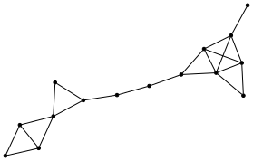
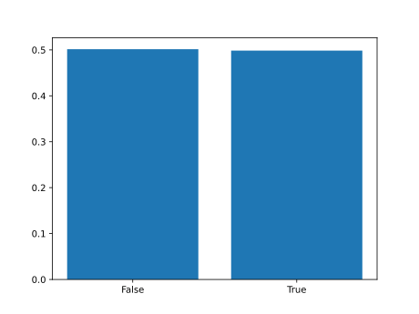
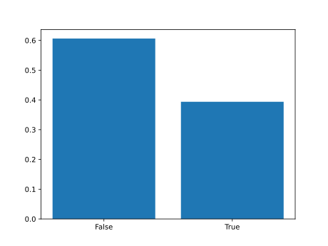

We discuss probabilistic programming with graphs and graph inference.
The key idea is to work with an abstract interface with an abstract
Vertex of vertices, a probability distribution
new on Vertex, and an edge relation
edge :: Vertex -> Vertex -> Bool.
This file is a literate Haskell file, see the readme file for details.
The code uses the LazyPPL
library for Haskell which provides an affine probability monad
Prob and Metropolis-Hastings inference methods. Similar
code would work in many other probabilistic programming languages; the
advantage of LazyPPL is that it has types, supports memoization, and has
an explicitly separate affine monad Prob.
{-# LANGUAGE FlexibleInstances #-}
{-# LANGUAGE MultiParamTypeClasses #-}
{-# LANGUAGE FunctionalDependencies #-}
{-# LANGUAGE UndecidableInstances #-}
{-# LANGUAGE ScopedTypeVariables #-}
{-# LANGUAGE ExtendedDefaultRules #-}
module GraphDemo where
import LazyPPL
import Distr
import Control.Monad
import Data.List
import Data.Maybe
import Graphics.Matplotlib
import Distr.Memoization
import Graphics.Matplotlib hiding (density)
instance MonadMemo Prob Double where
memoize = generalmemoizeFor an example inference problem, consider the following graph, which
we call test. We will ask, which kinds of vertices and
distribution on vertices likely generated it?

test :: [[Bool]]
test = map (map $ \x -> x==1)
[[0, 1, 1, 1, 0, 0, 0, 0, 0, 0, 0, 0, 0, 0, 0],
[1, 0, 1, 1, 0, 0, 0, 0, 0, 0, 0, 0, 0, 0, 0],
[1, 1, 0, 0, 0, 0, 0, 0, 0, 0, 0, 0, 0, 0, 0],
[1, 1, 0, 0, 1, 1, 0, 0, 0, 0, 0, 0, 0, 0, 0],
[0, 0, 0, 1, 0, 1, 1, 0, 0, 0, 0, 0, 0, 0, 0],
[0, 0, 0, 1, 1, 0, 0, 0, 0, 0, 0, 0, 0, 0, 0],
[0, 0, 0, 0, 1, 0, 0, 1, 0, 0, 0, 0, 0, 0, 0],
[0, 0, 0, 0, 0, 0, 1, 0, 1, 0, 0, 0, 0, 0, 0],
[0, 0, 0, 0, 0, 0, 0, 1, 0, 1, 1, 0, 0, 0, 0],
[0, 0, 0, 0, 0, 0, 0, 0, 1, 0, 1, 1, 1, 1, 0],
[0, 0, 0, 0, 0, 0, 0, 0, 1, 1, 0, 1, 1, 0, 0],
[0, 0, 0, 0, 0, 0, 0, 0, 0, 1, 1, 0, 1, 1, 0],
[0, 0, 0, 0, 0, 0, 0, 0, 0, 1, 1, 1, 0, 0, 1],
[0, 0, 0, 0, 0, 0, 0, 0, 0, 1, 0, 1, 0, 0, 0],
[0, 0, 0, 0, 0, 0, 0, 0, 0, 0, 0, 0, 1, 0, 0]]
showTestData = do
putStrLn "Generating graph-data.dot"
writeFile "graph-data.dot" $ graphToDot test
-- Convert the dot file to an svg using GraphViz, e.g. via
-- https://dreampuf.github.io/GraphvizOnlineAs we will show, we can, for example, infer some parameters to see whether it arises as a geometric graph, such as the following, or as an Erdős-Rényi graph, and so on.
p, a type v of
vertices, and new and edge functions.
class Show v => RandomGraph p v | p -> v where
new :: p -> Prob v
edge :: p -> v -> v -> BoolThe first kind of instance of this type class is a geometric
graph on a sphere, parameterized by a dimension
d :: Int and distance theta :: Double.
Vertices are uniformly distributed on the sphere, and there is an edge
between two vertices if their angle is less than theta.
data SphGrph = SG Int Double -- Graph parameters with dimension and distance
data SphVert = SV [Double] -- Vertices are coordinates
instance Show SphVert where
show (SV (x:y:xs)) = show x ++ "," ++ show (SV (y:xs))
show (SV (x:[])) = show x
instance RandomGraph SphGrph SphVert where
new (SG d theta) =
do
-- sample d-dimensional isotropic normal vectors
xs <- replicateM d $ normal 0 1
-- compute the length
let r = sqrt $ sum $ map (^ 2) xs
-- normalize, to get something on the sphere
return $ SV $ map (/ r) xs
edge (SG d theta) (SV xs) (SV ys) =
theta > (acos $ sum $ (zipWith (*) xs ys))Here, we have encoded the \((d-1)\)-sphere using \(d\)-dimensional Euclidean coordinates. We
are generating the points uniformly, by normalizing coordinates from a
d-variate normal distribution. (Note that in Haskell this implementation
detail could be hidden, by putting the implementation in a separate file
and not exporting the SV constructor.)
data Graphon = Graphon (Double -> Double -> Double)
data GraphonVertex = GV Double (Double->Bool)
instance Show GraphonVertex where
show (GV x _) = show x
instance RandomGraph Graphon GraphonVertex where
new (Graphon f) = do
x <- uniform
p <- memoize $ \y -> bernoulli $ sqrt $ f x y
return $ GV x p
edge _ (GV x p) (GV y q) = p y && q xWe use an encoding of vertices, firstly a number in the unit interval \([0,1]\) and secondly a function \([0,1]\to 2\).
The Erdős-Rényi graphon is a constantly grey graphon, and we can use this to build the Erdős-Rényi graph.erdosRenyi r = Graphon (\_ _ -> r)Querying triangles: The following code picks three nodes and asks whether they form a triangle.
isTriangle :: RandomGraph p v => p -> Prob Bool
isTriangle p = do
x <- new p
y <- new p
z <- new p
return (edge p x y && edge p y z && edge p x z)In the Erdős-Rényi graph, this will return true with probability \(1/{r^3}\). In other graphs, including the geometric graphs, it will be more complicated.
Building adjacency matrices: We define a function
that generates an adjacency matrix for a finite graph with \(n\) nodes. This works for any given
implementation of the RandomGraph interface, and just uses
new and edge.
ngraph :: RandomGraph p v => Int -> p -> Prob ([[Bool]],String)
ngraph n p = do vs <- replicateM n $ new p
let matrix = [[edge p v w | w <- vs] | v <- vs]
let csv = concat [show v ++ "\n" | v <- vs]
return (matrix,csv)In this section we describe some simple graph inference using the
Metropolis-Hastings methods of lazyppl. For this we use the
Meas monad of unnormalized measures, and score
to weight by likelihood.
In the first example, we suppose that the test graph at
the beginning of this page has been induced by some 3d geometric graph
with distance parameter theta, and we infer
theta. Our model is Bayesian: we have a uniform prior on
theta, and we suppose that there is some noise in the test
graph. From the posterior, we will sample a theta of high
posterior probability.
like. This function takes two adjacency matrices,
a and b, along with the error probability,
1-r. The like function scores based on this
error probability, and returns the number of cells in the adjacency
matrix that match.
like :: Double -> [[Bool]] -> [[Bool]] -> Meas Int
like r a b = do
let n = sum [if a!!i!!j==b!!i!!j then 1 else 0 | i <- [0..length a-1] , j <- [0..(i-1)]]
score $ r ^ n * (1-r) ^ ((floor $ 0.5 * fromIntegral (length a * (length a-1)))-n)
return nsuperuniformbounded n a b = do
xs <- replicateM n uniform
let x = sum xs
return $ x * (b - a) + atheta on a sphere, conditioned on the graph
test at the beginning of this page.
exampleA = do
-- theta is uniformly distributed in [0,pi]
theta <- sample (superuniformbounded 3 0 pi)
-- We are looking at the 3d geometric graph
let p = SG 3 theta
-- Sample a 15 vertex graph x from this p
(x,csv) <- sample (ngraph 15 p)
-- Observe that the test graph is very similar to x
n <- like 0.999 test x
return ((n,theta),(x,csv))testA = do
tws <- mh 0.1 exampleA
let tws' = take 20 $ every 1000 $ tws
putStrLn "Generating graph-sphere.csv"
writeFile "graph-sphere.csv" $ snd $ snd $ fst $ last tws'
putStrLn $ "Theta: " ++ (show $ fst $ fst $ last tws')
-- This can then be plotted using geometric_graph_plot.py
-- giving a picture like graph-sphere.html. This provides a probability distribution on the distance
theta, and produces the positions of the vertices on the
sphere. One of high posterior probability looks as follows, and gives a
geometric graph that totally agrees with the data:
(This is the same figure as in the introduction, and was
generated by the Metropolis-Hastings inference above.)
Note. The reader might wonder why we use an error
probability of 0.001 rather than just 0. This
error makes the model more interesting, and also makes
Metropolis-Hastings much faster.
For another illustration of inference, we look at problems where we are investigating whether some particular graph comes from a geometric graph or an Erdős-Rényi graph. This is a form of Bayesian model selection.
As a first step, we consider instances of theRandomGraph
interface that can be one of two different types. We can consider for
instance a parameterized graph that is either an Erdős-Rényi graph or a
geometric graph.
instance (RandomGraph a v,RandomGraph b w)
=> RandomGraph (Either a b) (Either v w) where
new (Left a) = do {x <- new a ; return $ Left x}
new (Right b) = do {x <- new b ; return $ Right x}
edge (Left a) (Left x) (Left y) = edge a x y
edge (Right b) (Right x) (Right y) = edge b x y
edge _ _ _ = Falser=0.5 and the geometric graph with theta=pi/2.
We do this by putting a prior of 0.5 on the graph either
being Erdős-Rényi or geometric, and then including the observation that
there is an edge between two nodes. In this example we do not consider
noise: we observe that there definitely is an edge.
exampleB = do
-- Prior on the type of graph
b <- sample $ bernoulli 0.5
let p = if b then Left (erdosRenyi 0.5) else Right (SG 2 (pi / 2))
-- Randomly sample two vertices and ask whether there is an edge
c <- sample $ do {a <- new p ; b <- new p ; return $ edge p a b}
-- Observation that there is in fact an edge
if c then score 1 else score 0
return b(In a Metropolis-Hastings simulation, score 0 has the
effect of rejecting that run of the program.)
testB = do
bws <- mh 1 $ exampleB
plotHistogram "graph-edge.svg" $ map fst $ take 100000 bws
Observing a triangle. Next: If we see a triangle, did it come from a sphere or from the Erdős-Rényi graph? We calculate the probability by rejecting the non-triangles.exampleC = do
-- Prior on the type of graph
b <- sample $ bernoulli 0.5
let p = if b then Left (erdosRenyi 0.5) else Right (SG 2 (pi / 2))
-- Randomly sample three vertices and ask whether they form a triangle
c <- sample $ isTriangle p
-- Observation that there is a triangle
if c then score 1 else score 0
return btestC = do
bws <- mh 1 $ exampleC
plotHistogram "graph-triangle.svg" $ map fst $ take 100000 bwsWe see that a triangle is more likely to have come from the Erdős-Rényi graph. 
For this particular example we can also do an pen-on-paper calculation to solve the problem, which gives probabilities \(0.6\) and \(0.4\) respectively, matching this output from the probabilistic programming inference.
Indeed: Given that the probability of observing a triangle in an Erdős-Rényi graph with \(r = 0.5\) is \(\left(\frac{1}{2}\right)^3 = \frac{1}{8}\), let’s understand the probability of observing a triangle in a geometric graph on the unit circle.
The probability of having an edge between two points on the unit circle – i.e. the probability that they are at a distance of at most \(θ ≝ \frac{\pi}{2}\) from each other – is \(\frac{2 θ}{2\pi} = \frac{1}{2}\). Therefore, since the samples are independent, \(P(\text{triangle})\) is the product of
\[P\big(\underbrace{\text{``first two points at distance } ≤ π/2 \text{ from each other"}}_{≝ A}\big)\]
and
\[P\big(\text{``third point at distance } ≤ π/2 \text{ from the first two"} \,\mid\, A\big)\]
By uniformity, the latter probability is the average length (divided by the total circumference of the unit circle) of the arc where the third point can land (expected value of the indicator random variable). This arc can range (linearly) between two extremes:
Thus, the probability of observing a triangle in the geometric graph is:
\[\frac{1}{2} \times \frac{\frac{1}{4} + \frac{1}{2}}{2} = \frac{3}{16}\]
Renormalizing the probabilities from both scenarios, we get, as expected:
graphToDot :: [[Bool]] -> String
graphToDot g = let vs = [0..length g -1] in
"graph {node[shape=point] \n edge[len=0.5] \n " ++
concat [show v ++ "\n" | v <- vs] ++
concat [show v ++ " -- " ++ show w ++ "\n" | v <- vs , w <- [0..v] , g !! v !! w]
++ "}"
plotHistogram :: (Show a , Eq a, Ord a) => String -> [a] -> IO ()
plotHistogram filename xs = do
putStrLn $ "Generating " ++ filename ++ "..."
let categories = sort $ nub xs
let counts = map (\c -> length $ filter (==c) xs) categories
file filename $ bar (map show categories) $ map (\n -> (fromIntegral n)/(fromIntegral $ length xs)) counts
putStrLn $ show $ zip categories $ map (\n -> (fromIntegral n)/(fromIntegral $ length xs)) counts
putStrLn $ "Done."
-- Plot histographs of chances of triangles in different graphs.
testD = do
onER <- mh 1 $ sample $ isTriangle $ erdosRenyi 0.5
onCircle <- mh 1 $ sample $ isTriangle $ SG 2 (pi/2)
onSphere <- mh 1 $ sample $ isTriangle $ SG 3 (pi/2)
onSphereFour <- mh 1 $ sample $ isTriangle $ SG 4 (pi/2)
plotHistogram "tris-ER" $ map fst $ take 10000 onER
plotHistogram "tris-s1" $ map fst $ take 10000 onCircle
plotHistogram "tris-s2" $ map fst $ take 10000 onSphere
plotHistogram "tris-s3" $ map fst $ take 10000 onSphereFour
main = do {showTestData; testA; testB; testC}